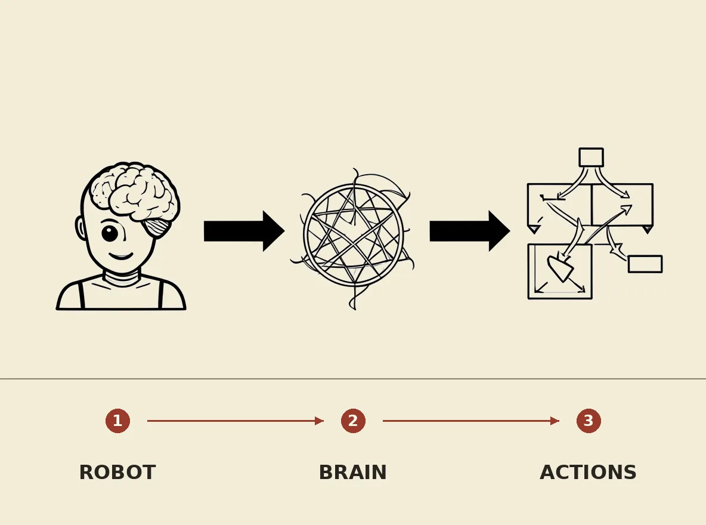

DeepMind developed a Gemini brain for robotics, a neural network that enables robots to learn and adapt in complex environments. The Gemini brain is a type of artificial general intelligence that can process and understand vast amounts of data, allowing robots to make decisions and take actions in real-time. This technology has the potential to revolutionize the field of robotics, enabling robots to perform tasks that require human-like intelligence and adaptability.